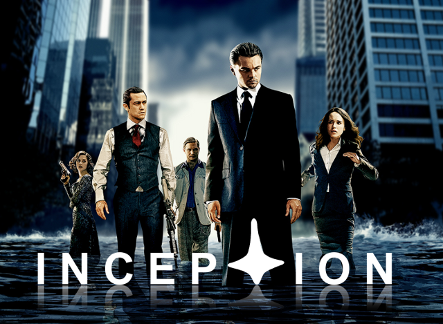
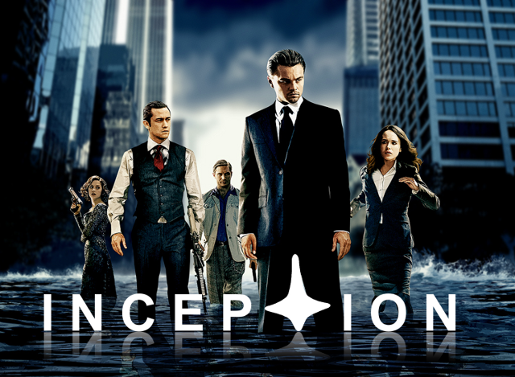

I absolutely love to program. Ever since I was a little child, I thought computers were the best thing ever. I watched my dad (now a system admin) control the computer and tell it to do things. I wanted that kind of power over technology. I wanted to be able to use it to my advantage to create. Last year I started programming in Java for a high school class. I also took a summer class where we learned web development. Now I am able to program in C, HTML, CSS, JavaScript, Java, and SQL. I always learn new things every time I program!

 
